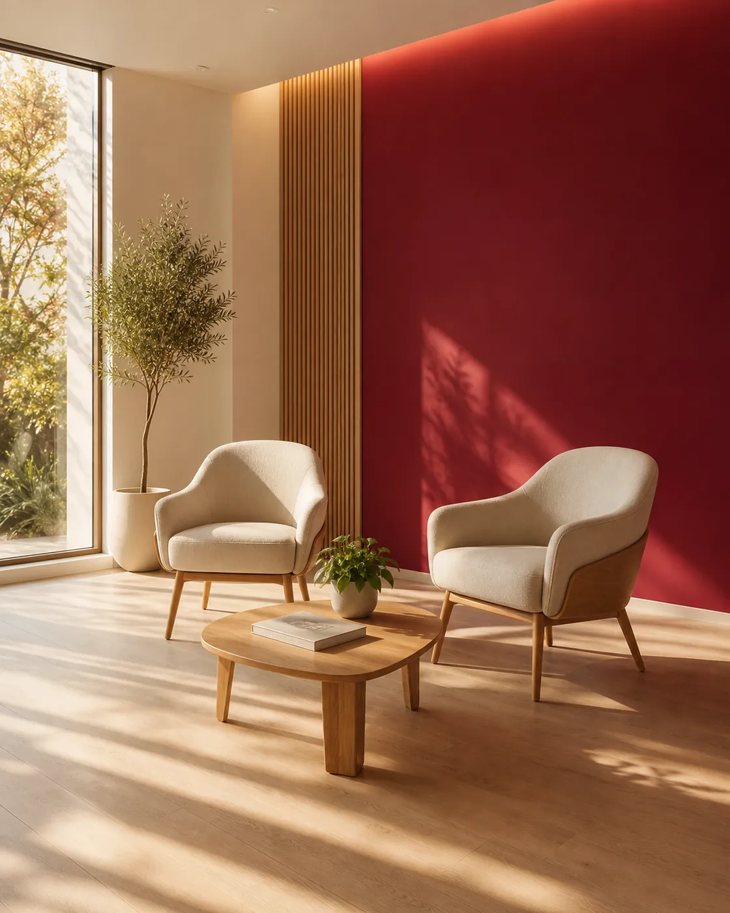
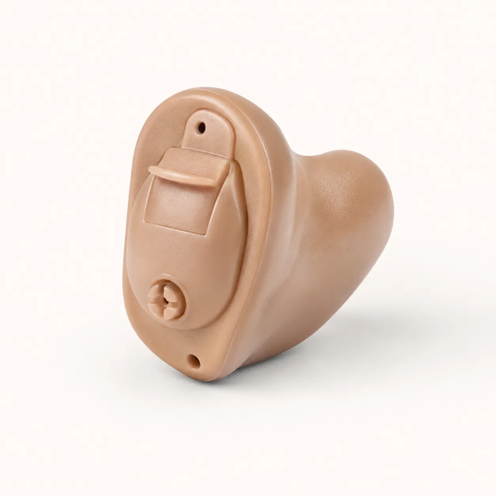
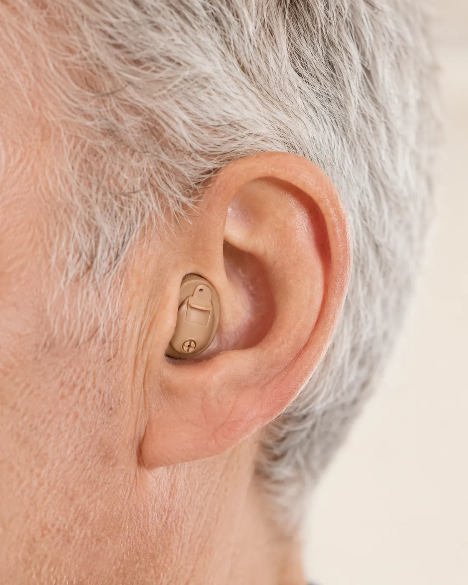
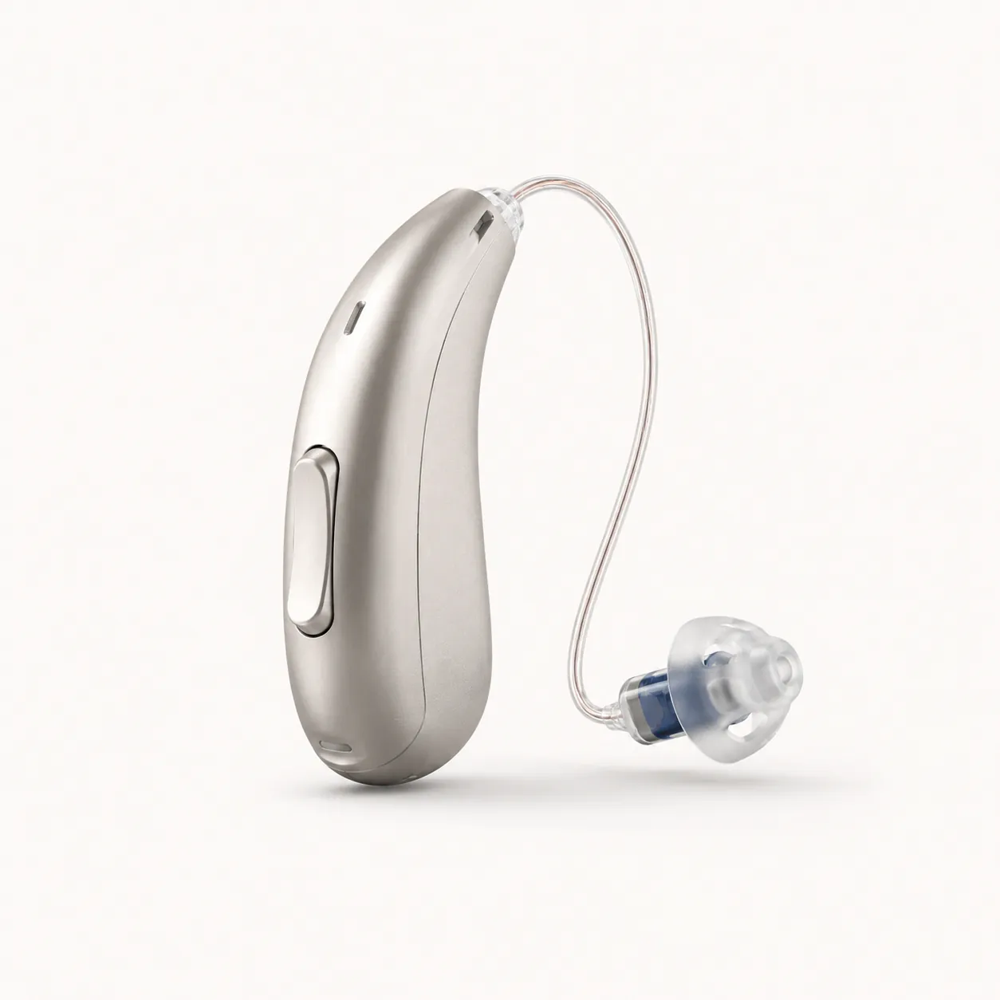
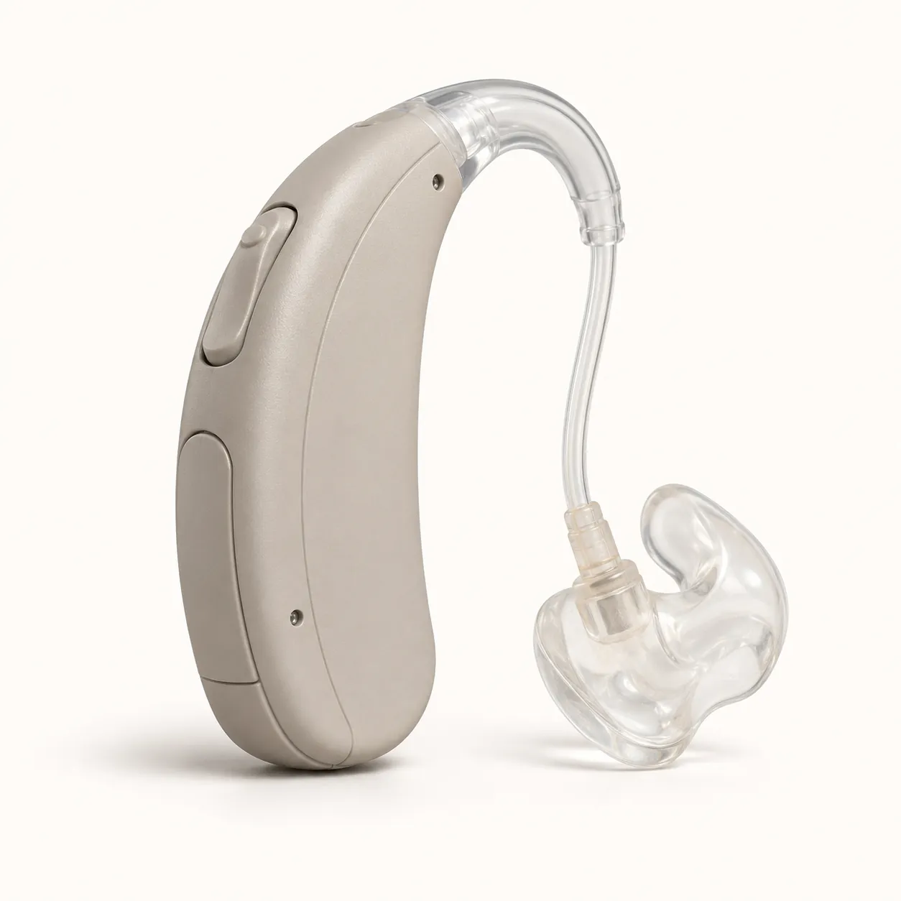

Retrouvez le confort d'entendre, tout simplement.
Bilan auditif clinique, essai d'appareils pendant 30 jours et suivi personnalisé. Nous comparons plusieurs marques pour vous proposer la solution réellement adaptée à votre vie, au meilleur prix.
- Indépendant, toutes marques
- Essai 30 jours sans engagement
- Conventionné INAMI

- 45min
Bilan clinique completEn cabine insonorisée, résultats expliqués
- 6
Marques comparéesOticon, Phonak, Signia, Starkey, Unitron, Bernafon
- 30j
Essai en vie réelleMaison, travail, loisirs, avant toute décision
- ∞
Suivi inclusRéglages, contrôles et entretien, tant que vous portez vos appareils
Dites-nous où vous en êtes, on vous guide.
Que vous ayez un doute, que vous accompagniez un parent ou que vous portiez déjà des appareils, chaque situation a son chemin.
Je pense mal entendre
Faites le point en 1 minute avec les 6 signes qui doivent alerter.
Faire le pointJ'accompagne un proche
Prenez rendez-vous pour un parent. Vous êtes le bienvenu pendant le bilan.
Réserver pour un procheJe veux connaître le prix
Intervention INAMI, mutualité, reste à charge : tout est expliqué clairement.
Prix & remboursementJe suis déjà appareillé
Réglage, contrôle, entretien : demandez un rendez-vous de suivi.
Rendez-vous de suivi
Un parcours clair, sans pression commerciale.
Vous arrivez avec une question, vous repartez avec une réponse précise. Le bon réglage compte autant que le bon appareil.
-
01
Indépendant des marques
Nous comparons six fabricants. Le modèle dépend de votre audition et de votre vie, pas d'un quota.
-
02
Transparent sur le prix
Coût brut, intervention INAMI, mutualité et reste à charge clarifiés avant toute décision. Nous préparons votre dossier.
-
03
Présent dans la durée
Réglages, contrôles, entretien et conseils inclus. Tant que vous portez vos appareils, nous restons à vos côtés.
Ces situations vous parlent ?
Un signal isolé n'est pas alarmant. Plusieurs signes cumulés méritent un bilan. Cochez ce que vous vivez régulièrement.
Cochez ce qui vous ressemble
Sélectionnez les situations que vous vivez régulièrement. Le résultat s'affiche ici, instantanément.
Réserver un bilan auditifCet outil ne remplace pas un examen. Seul un bilan clinique mesure précisément votre audition.
De la première question au confort retrouvé
Pas de jargon, pas d'urgence inutile. Chaque étape est expliquée et chaque décision vous appartient.
Prise de contact
Un appel rapide pour comprendre votre situation et fixer un rendez-vous.
Bilan auditif clinique
Examen complet en cabine, analyse de vos besoins et résultats commentés.
Choix de la solution
Le modèle selon votre audition, votre style de vie et votre budget.
Essai 30 jours
Vous testez au quotidien, on ajuste les réglages selon votre ressenti.
Suivi durable
Réglages fins, contrôles, entretien et accompagnement administratif.
Trois formes, un choix adapté à votre audition.
Le bon format dépend de votre perte, de votre anatomie et de votre quotidien. Survolez une carte pour voir l'appareil porté.


Intra-auriculaire
L'appareil entier se loge dans le conduit auditif. La solution la plus discrète.
Pertes légères à modérées

Contour RIC
Le boîtier derrière l'oreille, l'écouteur dans le conduit. Le format le plus polyvalent.
Pertes légères à sévères

Contour BTE
Le contour traditionnel, puissant et robuste, pour les situations particulières.
Pertes sévères à profondesJusqu'à 1 701 € d'intervention INAMI pour deux oreilles.
Les mutualités ajoutent souvent une intervention complémentaire. Nous vérifions votre situation et clarifions le reste à charge avant toute commande.
Montants indicatifs INAMI 2026. Le montant exact dépend de votre statut (BIM/VIPO ou ordinaire) et de votre mutualité.
Pourquoi ils nous recommandent
« On a pris le temps d'écouter ma situation et d'expliquer chaque résultat. Je n'avais jamais eu un suivi aussi clair. »
« L'essai 30 jours m'a permis de vraiment tester en réunion et au resto. Adapté ensuite, sans pression. »
« Un accueil humain et des réglages qui évoluent avec moi. Je n'imaginais plus de revenir au silence. »

Au Sart-Tilman, facile d'accès.
Accès aisé depuis l'E25 et l'E40. Parking gratuit à proximité, places PMR devant l'entrée.
| Lundi – vendredi | 9h – 18h |
| Samedi | 9h – 13h |
| Dimanche | Fermé |
Accès de plain-pied, sanitaires adaptés. Besoin particulier ? Dites-le-nous à la prise de rendez-vous.
Ce qu'on nous demande souvent
Une autre question ? Appelez-nous, on vous répond simplement.
0470 20 62 26Le bilan m'engage-t-il à acheter un appareil ?
Non. Aucune obligation d'achat, aucune pression. Vous repartez avec un audiogramme commenté et un avis professionnel clair, et, si c'est pertinent, une proposition de solution à essayer.
Et si je ne suis pas satisfait pendant l'essai ?
L'essai n'engage à rien. Vous pouvez interrompre la procédure ou changer de modèle. Notre rôle est de trouver la bonne solution, pas de vendre à tout prix.
Faut-il passer chez un ORL ?
Oui, pour bénéficier de l'intervention INAMI : une prescription d'un médecin ORL est nécessaire. Nous vous expliquons la marche à suivre et préparons le dossier avec vous.
Devrai-je avancer des frais importants ?
Cela dépend du dossier et de votre mutualité. Nous clarifions le reste à charge avant toute validation, pour que vous sachiez exactement à quoi vous attendre.
Que comprend l'accompagnement ?
Le choix du modèle, les réglages, le suivi régulier, l'entretien et l'accompagnement administratif pour le remboursement. Tant que vous portez vos appareils, nous restons à vos côtés.
Parlons de votre audition.
Un échange simple suffit pour savoir si un bilan est utile dans votre situation. Sans engagement.